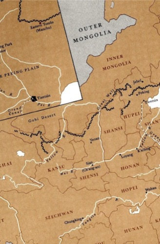
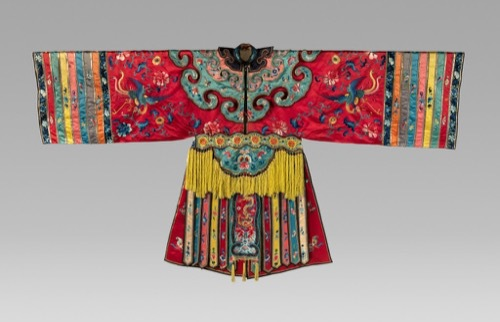
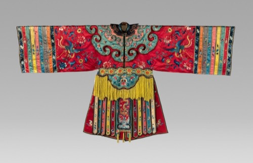
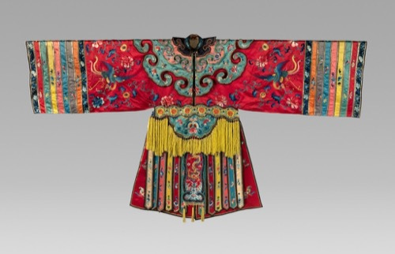
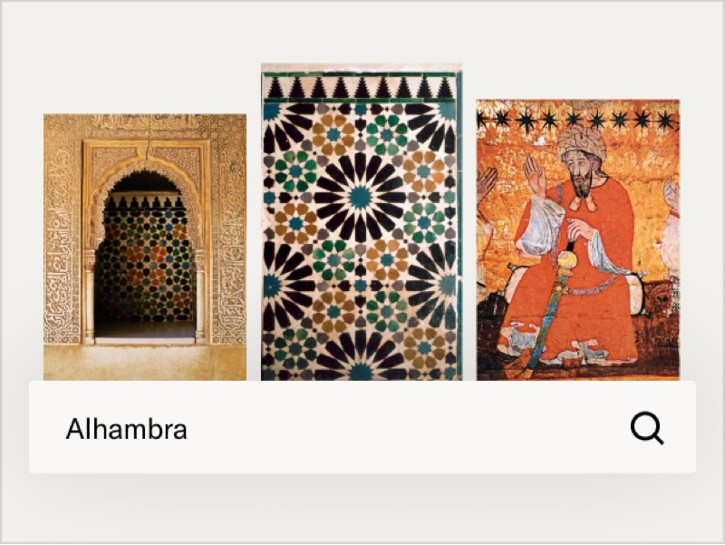

 




Explore millions of high-quality primary sources and images from around the world, including artworks, maps, photographs, and more.
Explore migration issues through a variety of media types
-
 Part of
Part ofStreet Art Graphics -
 Part of
Part ofThe Journal of Economic Perspectives, Vol. 34, No. 1 (Winter 2020)
-
 Harness the power of visual materials—explore more than 3 million images now on JSTOR.
Search for images